1. Démarrer
Se connecter
Polaris est une adresse internet sécurisée : rien à installer, il suffit d'un navigateur (Edge, Chrome, Firefox), au bureau comme sur une tablette. On s'y connecte avec son adresse e-mail et son mot de passe.
- Premier accès. L'administrateur crée votre compte et vous transmet un lien personnel. Ouvrez-le rapidement : il n'est valable que peu de temps (une heure en général) et ne sert qu'une fois. Choisissez alors votre mot de passe (au moins 8 caractères, avec des lettres et des chiffres).
- Les fois suivantes, connectez-vous avec votre e-mail et ce mot de passe.
- Mot de passe oublié ? Le lien sous le formulaire de connexion envoie un lien de réinitialisation. Si rien n'arrive, demandez un nouveau lien à l'administrateur : personne, pas même lui, ne connaît ni ne choisit votre mot de passe.
Un lien trop ancien, ou déjà utilisé, ne marche plus. Ce n'est pas grave : l'administrateur en génère un nouveau en un clic, qui remplace l'ancien.
La barre du haut
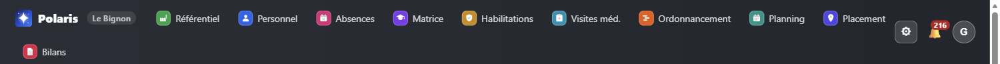
- Polaris et le nom du site (« Le Bignon ») : un clic sur le logo ramène à l'accueil, dont le grand logo ouvre le Planning.
- Les modules, chacun avec sa pastille de couleur, que l'on retrouve sur le titre de l'écran. Vous ne voyez que ceux auxquels votre compte donne accès : deux collègues n'ont pas forcément le même menu.
- ⚙ ouvre les écrans de réglage (Référentiel… Utilisateurs), seulement si vous y avez droit.
- 🔔 compte les habilitations qui arrivent à échéance dans les 90 jours ou sont déjà dépassées, et mène à l'écran Habilitations.
- Le rond à votre initiale : changer de mot de passe, ouvrir ce guide, se déconnecter.
Ce qui marche pareil partout
- Enregistrement automatique. Presque toute saisie s'enregistre seule : la mention « Enregistrement… » puis « Enregistré ✓ » s'affiche brièvement. Pas de bouton « Sauvegarder » à chercher. Si l'enregistrement est refusé (droit insuffisant, règle non respectée), la valeur revient à ce qui est enregistré et un message en rouge dit pourquoi.
- La recherche, en haut de chaque grand écran, porte sur plusieurs colonnes à la fois (nom, prénom, matricule, badge, équipe…) et, dans la Matrice, les Habilitations et le Planning, sur tout l'effectif, même hors des filtres de service ou d'équipe. Un compteur à côté indique combien de lignes sont affichées sur combien.
- Les filtres (service, équipe, statut…) sont des boutons segmentés. Ils sont gardés dans l'adresse de la page : un rafraîchissement (F5) ne les perd pas, et un lien copié rouvre la même vue. Ils vous suivent quand vous passez du Planning au Personnel, à la Matrice ou aux Habilitations par le menu.
- Consultation seule. Sur un écran où vous n'avez que le droit de lecture, les champs sont grisés et un bandeau 👁 « Consultation seule » le rappelle : impossible de faire une erreur de manipulation.
- Les fenêtres (confirmations, fiches) se déplacent en les attrapant par leur titre.
- Le passé reste consultable. On ne supprime pas une personne qui part, on ne réécrit pas une rotation : en revenant sur une semaine d'il y a six mois, on voit qui était où.
2. La logique de l'outil
Polaris se construit comme on construit un planning à la main, en partant de ce qui change le moins vers ce qui change tous les jours. Chaque étage s'appuie sur le précédent : c'est pour cela qu'une erreur dans le Référentiel se voit partout, et qu'une absence saisie tôt évite des erreurs plus tard.
| # | Étape | La question à laquelle elle répond |
|---|---|---|
| 1 | Référentiel | Quels services, lignes et postes existent ? Combien de personnes faut-il par poste et par quart, avec quelles habilitations ? Qui en est titulaire ? |
| 2 | Personnel & Absences | Qui travaille ici, avec quel contrat, dans quelle équipe ? Qui est absent, quand, pourquoi ? |
| 3 | Matrice & Habilitations | Qui sait tenir quel poste, à quel niveau ? Qui a quelle formation, jusqu'à quand ? |
| 4 | Ordonnancement | Quels jours, sur quels quarts, quelles lignes tournent ? |
| 5 | Planning | Qui est sur quel poste, jour par jour, sur les trois semaines à venir ? |
| 6 | Placement | Le jour J, sur ce quart, qui est à quel poste et à quel numéro de rotation ? La feuille affichée dans le couloir. |
| 7 | Affichage & Bilans | Ce que voient les opérateurs ; ce qu'en tire la direction (fragilités, recyclages, absentéisme…). |
Le Planning et le Placement écrivent la même information : ce qu'une personne fait un jour donné. Une affectation posée dans l'un apparaît aussitôt dans l'autre, à la TV et dans les bilans. Une absence saisie au Personnel ou dans Absences remplit déjà le Planning.
3. Le vocabulaire
Service, ligne, poste
C'est l'organisation physique de l'usine, du plus grand au plus petit. Un service (Conditionnement, Fabrication, Magasin, Qualité…) contient des lignes (une machine ou un îlot : Thermo 1, Ligne vrac…), et chaque ligne des postes de travail (conducteur, chargement, mise en colis…). Le poste est l'endroit où l'on place une personne. L'usine entière est décrite ainsi, y compris les fonctions support (maintenance, qualité, RH…).
Chaque poste a une catégorie, qui sert aux bilans :
- Manager — encadrement (chef d'équipe, responsable…) ;
- Conducteur — conduite de ligne ;
- Opérateur — les autres postes de production.
Quart et équipe : ce n'est pas la même chose
Le quart est le créneau horaire : matin, après-midi, nuit, ou journée (pleine journée, horaires de bureau). L'équipe est un groupe de personnes. C'est la confusion la plus fréquente, car les équipes tournent : l'équipe A n'est pas « l'équipe du matin », elle est du matin cette semaine et d'après-midi la suivante.
| Équipe | Semaine 1 | Semaine 2 | Semaine 3 |
|---|---|---|---|
| Équipe A | Matin | Après-midi | Nuit |
| Équipe B | Après-midi | Nuit | Matin |
| Équipe C | Nuit | Matin | Après-midi |
Compétence et habilitation : deux choses séparées
La compétence dit à quel point une personne maîtrise un poste (niveau 0 à 3). C'est un jugement du manager, il ne périme pas. Elle se gère dans la Matrice.
L'habilitation est une formation, réglementaire (sécurité, conduite d'engins, habilitation électrique…) ou interne (qualité, CCP, hygiène…), avec une date de passage et souvent une durée de validité : elle expire et doit être recyclée. Elle se gère dans Habilitations.
Les deux sont indépendantes : on peut être confirmé sur une ligne et ne pas avoir les CCP exigés pour la conduire seul ; on peut avoir toutes ses formations et débuter sur le poste. Polaris contrôle les deux au moment de placer quelqu'un.
Les autres mots à connaître
| Mot | Sens dans Polaris |
|---|---|
| Placement / affectation | Ce qu'une personne fait un jour donné : un poste (sur un quart), un motif d'absence, « Non travaillé » ou un temps partiel. Une seule chose par personne et par jour. |
| Titulaire / poste fixe | La personne habituellement sur ce poste. Le pré-remplissage du Planning l'y pose automatiquement. Un poste peut avoir plusieurs titulaires ; une personne n'a qu'un poste fixe. |
| Effectif requis | Le nombre de personnes qu'il faut sur un poste, par quart, « en marche normale » (ce qui couvre la grande majorité des productions). Il se règle au Référentiel. |
| N° de rotation / place | Les positions d'un poste où les opérateurs tournent (par exemple toutes les heures) : 1, 2, 3… ou des noms de place. Elles découpent le poste en cases au Placement. |
| PTR / PTNR | Poste de travail remplaçable / non remplaçable. Un PTNR n'a qu'un titulaire par conception (ex. un responsable qualité) : il est mis à part dans les bilans de fragilité. |
| Zone d'attente (CDT…) | Un poste de pré-affectation où l'on range des opérateurs avant que le chef d'équipe les répartisse. Il apparaît en « À répartir ». |
| Intérim / avec agence | Un contrat géré par une agence (intérim, CDI intérimaire…). Toujours surligné en jaune. |
| JNT / NT | Jour non travaillé. C'est en général le seul motif utilisé pour un intérimaire qui ne vient pas ce jour-là. |
| TP | Temps partiel : journées ou demi-journées non travaillées, réglées une fois pour toutes sur la fiche de la personne. |
| Hors effectif | Un jour qu'aucun contrat ne couvre (avant l'arrivée, après le départ, entre deux missions) : on ne peut rien y poser. |
| Forçage | Un placement fait malgré une habilitation manquante, après confirmation. Il est tracé (qui, quand) et reste en rouge. |
4. Qui fait quoi
Chacun ne modifie que ce qui relève de lui. Chaque compte a un rôle (chef d'équipe, RH, ordonnancement…, ou un rôle propre au site), et chaque rôle a, module par module, l'un de trois droits :
- Aucun — le menu n'apparaît pas ;
- Lecture — consultation seule : les champs sont grisés, rien ne peut être modifié par erreur ;
- Modification — saisie complète.
La grille de votre site (rôle × module) est dans Réglages · Utilisateurs, pour qui y a accès : c'est elle qui fait foi. Deux règles s'ajoutent à cette grille :
- un compte au rôle chef d'équipe ne modifie que les personnes de son équipe (équipes rattachées dans Réglages · Équipes) : les autres restent visibles, utile pour repérer un renfort, mais grisées ;
- le forçage d'un placement sans habilitation est possible pour tout compte qui peut placer ; il est tracé (qui, quand) et reste visible en rouge.
5. Référentiel
Le Référentiel décrit l'usine : des machines, et autour de chaque machine des postes de travail. On y définit aussi ce que chaque poste exige (effectif, niveau, habilitations) et qui en est titulaire. Il change rarement, mais tout le reste en dépend : un poste mal décrit ici donne un besoin faux au Planning, au Placement et dans les bilans.
L'écran se lit de haut en bas : chaque service est un bloc, qui contient ses lignes, qui contiennent leurs postes en tableau. Les boutons « ＋ » ajoutent un service, une ligne ou un poste, à compléter ensuite case par case ; chaque case s'enregistre dès qu'on la quitte. Un service, une ligne ou un poste se désactive (case « Actif ») plutôt qu'il ne se supprime : son historique est conservé.
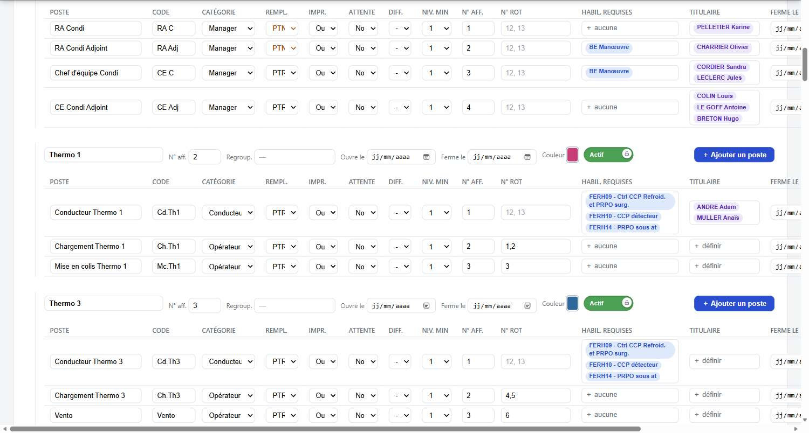
Réglages d'un service et d'une ligne
- N° aff. — l'ordre d'affichage : des services dans tous les filtres, le Placement, la TV et les bilans ; des lignes et des postes sur la TV et les feuilles imprimées.
- Regroup. (ligne) — une étiquette libre pour regrouper des lignes dans les bilans (« Thermo », « Vrac »…). Elle est aussi proposée comme « Service » dans la fiche Personnel.
- Ouvre le / Ferme le (ligne) — une ligne neuve ou qui s'arrête à une date connue : avant l'ouverture et après la fermeture, elle n'apparaît plus dans le Planning, le Placement, l'Ordonnancement et les bilans. Vide = toujours ouverte.
- Couleur de ligne — la couleur de la ligne sur les feuilles « PDF pour Affich. » du Placement, choisie dans une palette de pastilles.
Les colonnes d'un poste
| Colonne | Rôle |
|---|---|
| Poste | Le nom complet (« Conducteur Thermo 1 »). Unique parmi les postes actifs du site. |
| Code | Le nom court, affiché dans les cases du Planning (6 caractères au plus : « CDC », « CHG1 »…). Au Planning, le survol d'une case redonne le nom complet. |
| Catégorie | Manager, conducteur ou opérateur. Sert aux bilans et au filtre « Conducteurs ». |
| Rempl. | PTR (remplaçable) ou PTNR (non remplaçable, un seul titulaire par conception). Un PTNR est exclu des indicateurs de fragilité et isolé dans les bilans ; il n'a aucun effet sur le planning. |
| Impr. | « Non » masque le poste sur les feuilles imprimées du Placement (postes qui ne servent qu'à construire le planning). Il reste utilisable à l'écran. |
| Attente | Zone d'attente (ex. CDT) : le pré-remplissage peut y ranger des opérateurs, que les chefs d'équipe répartissent ensuite. Hors matrice et hors bilans de compétence. |
| Diff. | Difficulté de formation au poste (1 à 3), à titre indicatif. |
| Niv. min | Le niveau de compétence minimum pour tenir le poste. En dessous, la case est « hors compétence » (rouge au Planning). |
| N° aff. | L'ordre du poste dans sa ligne, à la TV et sur les feuilles. |
| N° Rot | Les positions de rotation du poste, qui le découpent en cases au Placement (voir ci-dessous). |
| Habil. requises | Les formations exigées pour tenir ce poste (CCP, habilitation électrique, conduite d'engins…). Seules celles-ci déclenchent la demande de confirmation au placement ; une formation qui n'est pas cochée ici ne bloque rien. |
| Titulaire | La ou les personnes dont c'est le poste fixe. Le pré-remplissage les y pose automatiquement chaque semaine ; les chefs d'équipe affinent ensuite. Même donnée que « Poste fixe » sur la fiche Personnel. |
| Ferme le | Date de fermeture prévue du poste ; à partir de cette date il disparaît du planning. |
| Matin, Après-midi, Nuit, Journée… | L'effectif requis par quart, avec trois valeurs possibles : vide « – » = le poste ne tourne pas sur ce quart (on ne peut pas y placer quelqu'un) ; 0 = il tourne, mais sans besoin ; N = il faut N personnes. C'est le besoin « en marche normale ». |
| Actif | Décocher retire le poste des écrans sans effacer son historique. |
Numéros de rotation et noms de place
Au conditionnement, les opérateurs tournent entre plusieurs positions d'un même poste (par exemple toutes les heures). La colonne N° Rot les décrit :
12, 13crée deux cases,15-17en crée trois (15, 16, 17) ;- un « numéro » peut aussi être un nom de place, plus parlant :
Ailes, Panés, Aide palettisation. Séparez les places par des virgules ou des points-virgules (l'espace fait partie du nom) ; au survol du champ, le découpage obtenu s'affiche ; - laissez vide si le poste n'est pas numéroté.
Au Placement, la personne est déposée sur sa case : l'ordre des cases est l'ordre de rotation de la prise de poste. Gardez des noms courts (une quinzaine de caractères) pour que les feuilles restent lisibles, et ne renommez pas une place à la légère : les affectations et horaires déjà posés sur l'ancien nom s'en détachent et retombent « sans numéro ».
Le Référentiel décrit une réalité stable. Une erreur ici se propage partout : un effectif requis trop haut met tout le monde en rouge, une habilitation exigée à tort bloque des placements. Les noms de poste, de code et de ligne sont uniques par site : Polaris refuse un doublon.
6. Personnel
L'annuaire de l'usine : une ligne par personne qui travaille ou a travaillé sur le site. On ne supprime pas quelqu'un qui part : il passe « Parti » et reste dans l'historique. Ainsi le planning d'une semaine passée montre toujours les vrais noms, et un intérimaire qui revient l'année suivante retrouve sa fiche, ses compétences et ses habilitations.
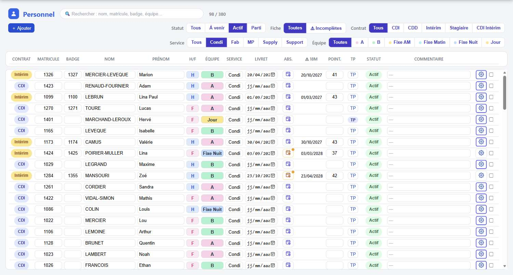
- ＋ Ajouter, sous le titre, ouvre la fiche de création ; à côté de la recherche, le nombre de personnes affichées sur le total.
- Les filtres : Statut (Tous, À venir, Actif, Parti), Fiche (Toutes, ⚠ Incomplètes), Contrat, puis Service et Équipe.
- Contrat et Statut sont des résultats : un clic ouvre le Cycle de vie, où l'on gère les contrats.
- Abs. ouvre les absences de la personne ; TP son temps partiel (« TP » coloré = un temps partiel est réglé).
- L'engrenage ouvre la fiche (commentaire, poste fixe, RGPD) ; la case à cocher sert à fusionner deux fiches.
Les colonnes
Tout se saisit directement dans le tableau, et s'enregistre seul. Nom et prénom sont remis en forme automatiquement (« DUBOIS Anna »).
| Colonne | Contenu |
|---|---|
| Contrat | Le type du contrat le plus récent. Clic : Cycle de vie. |
| Matricule, Badge | Identifiants RH et de badgeuse ; la recherche les trouve. |
| Nom, Prénom, H/F | Identité. |
| Équipe | L'équipe habituelle (sa couleur). Une personne peut être placée ailleurs ponctuellement : c'est seulement le réglage par défaut des filtres. |
| Service | Le service d'affectation, éventuellement précisé par un regroupement de lignes (« Condi — Thermo »). Il décide de la TV sur laquelle la personne apparaît et de la plupart des filtres. |
| Livret | La date de remise du livret d'accueil signé. Pour un intérimaire, elle sert de départ à l'alerte des 18 mois. |
| Abs. | La fenêtre des absences de la personne. |
| ⚠ 18m | Pour un intérimaire actif : la date des 18 mois (livret + 18 mois). Jaune entre 3 et 5 mois d'ancienneté, orange à partir de 17 mois, rouge au-delà de 18 mois. Le calcul part du livret, sans tenir compte des interruptions : le détail des contrats reste géré dans le logiciel RH. |
| Point. | La pointure, pour préparer les accueils (bottes, EPI). |
| TP | Le temps partiel (voir plus bas). « TP » coloré = un temps partiel est réglé. |
| Statut | À venir, Actif ou Parti, calculé à partir des contrats. Clic : Cycle de vie. |
| Commentaire | Une note libre visible de ceux qui consultent le Personnel (ex. « à reprendre en priorité », « ne pas reprendre »). Jamais d'information médicale ni de donnée sensible. |
Créer une personne
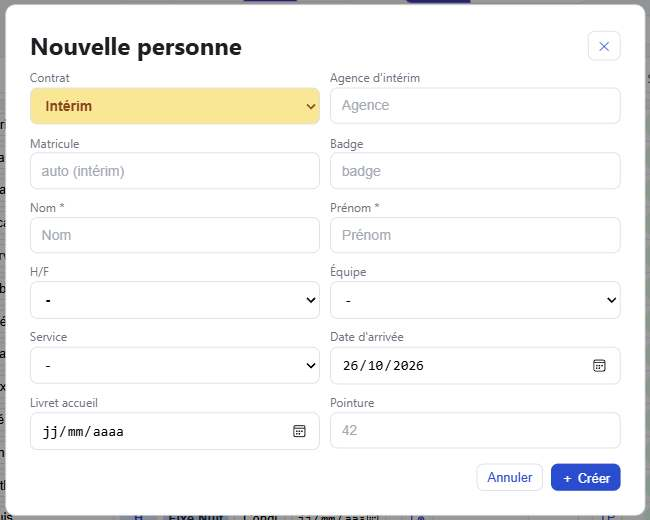
- ＋ Ajouter ouvre la fiche : contrat, agence (pour un contrat géré par une agence), matricule, badge, nom, prénom, H/F, équipe, service, date d'arrivée, livret d'accueil, pointure.
- La date d'arrivée peut être dans le futur : la personne reste « À venir » jusqu'au jour J et ne peut pas être placée avant.
- ＋ Créer. La nouvelle fiche apparaît surlignée en vert, à sa place alphabétique ; si un filtre la masquait, les filtres sont levés.
- Si un homonyme existe déjà, Polaris le signale (⚠ Doublon possible) et recommande de réactiver l'ancienne fiche plutôt que d'en créer une seconde, pour garder son historique.
Une pastille orange ! devant un nom signale une fiche incomplète : aucun contrat, ou un contrat d'agence sans agence. Le filtre Fiche · ⚠ Incomplètes les rassemble, et un compteur « ⚠ N à compléter » en haut à droite y mène directement.
Le cycle de vie : contrats, arrivée, départ
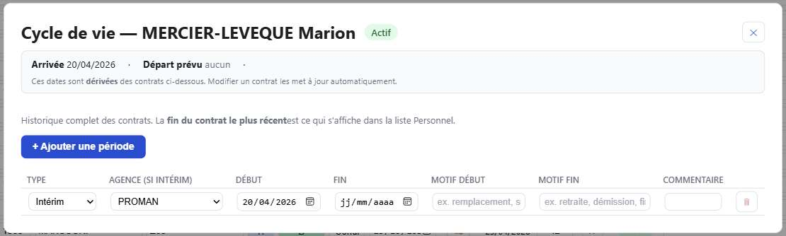
Un clic sur le Contrat ou le Statut ouvre le Cycle de vie : la liste des périodes de contrat (type, agence, dates de début et de fin, motifs). L'arrivée et le départ en sont déduits : l'arrivée est le début du premier contrat, le départ la fin du dernier quand tous sont fermés.
- Contrat sans date de fin = en cours, ou renouvelé régulièrement.
- Intérimaire qui revient (vacances d'été, de Noël…) : ajoutez une nouvelle période sur la même fiche. Entre deux périodes, la personne est « hors effectif » : rien ne peut lui être posé, et le Cycle de vie signale le trou de contrat.
- Départ prévu (fin de mission, retraite…) : saisissez la date de fin du dernier contrat. La personne passe « Partie » le lendemain, sort du planning, des compétences comptées et des bilans à partir de cette date, et son poste fixe est libéré.
- Si des affectations existaient déjà après la date saisie, Polaris le signale dès que vous quittez le champ : il les liste et propose de les retirer (Oui, retirer) ou de les garder. Gardées, elles restent signalées en rouge (Affectations hors contrat) avec un bouton pour les retirer plus tard. Les absences, elles, sont conservées.
Le temps partiel
Le bouton TP ouvre le réglage du temps partiel, par périodes (un temps partiel peut changer dans l'année). Les options sont cumulables :
- Jours non travaillés — par exemple jamais le lundi, ou le mercredi après-midi ;
- Créneau — matin fixe, après-midi fixe, ou « suit le quart de l'équipe » ;
- Horaires — ceux du quart, ou des horaires réduits saisis jour par jour.
Un aperçu de la quinzaine montre l'effet. Le Planning marque ensuite « TP » tout seul les journées non travaillées. Cas fréquent : une personne qui ne fait que le matin, dans une équipe qui tourne matin / après-midi, a un « TP » une semaine sur deux — la semaine où son équipe est d'après-midi. C'est la rotation de l'équipe qui produit l'alternance.
La fiche (engrenage)
- Commentaire et poste fixe de la personne (le poste où le pré-remplissage la pose ; même donnée que « Titulaire » au Référentiel) ;
- RGPD (droit dédié) : exporter les données de la personne, l'anonymiser (on garde l'historique de production, on retire l'identité) ou la supprimer définitivement. À réserver aux demandes légitimes.
Fusionner deux fiches
Si une même personne a deux fiches, cochez les deux (case en bout de ligne), puis 🔗 Fusionner : choisissez la fiche à garder ; l'autre lui transmet son historique et disparaît.
7. Absences
Toutes les absences de l'effectif, regroupées en périodes lisibles (« CP du 04/09 au 12/09 »), même quand elles ont été saisies jour par jour au Planning. Saisir les absences tôt, c'est déjà pré-remplir le planning : une personne absente ne peut plus être placée par erreur, et les besoins deviennent justes.
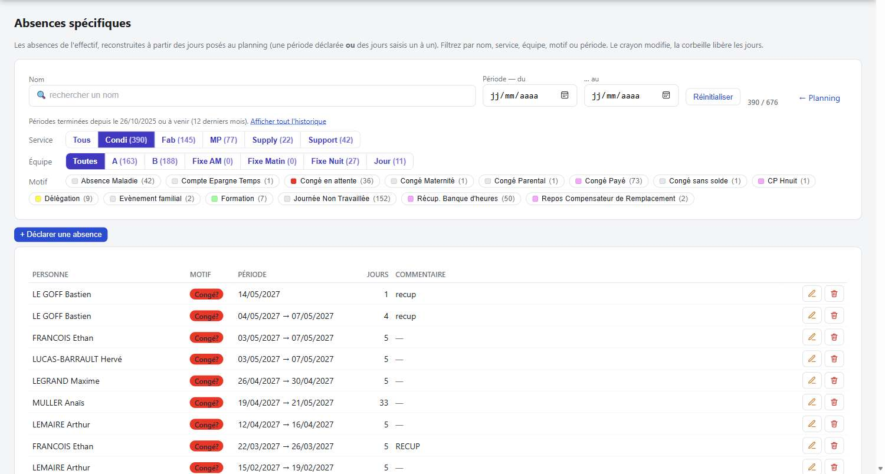
Filtrer
- Nom et période (calendrier, deux clics : début puis fin) ;
- Service et Équipe, en boutons avec le nombre de personnes ;
- Motif, en pastilles de couleur : on peut en cocher plusieurs. Exemple utile : le motif « congé en attente » pour voir toutes les demandes qu'un responsable doit encore valider.
Chaque compteur tient compte des autres filtres. Par défaut, l'écran montre les absences à venir et celles terminées depuis moins de 12 mois ; le lien Afficher tout l'historique remonte plus loin.
Déclarer, modifier, supprimer
- + Déclarer une absence : la personne, le motif (liste avec recherche), la période au calendrier (le nombre de jours se calcule seul) et un commentaire facultatif.
- Le crayon rouvre une période (motif, dates, commentaire) ; la corbeille la supprime de tous ses jours d'un coup.
- La même saisie existe sur la fiche Personnel (colonne « Abs. »). Réinitialiser vide les filtres ; ← Planning retourne au Planning.
- Si la personne a déjà des affectations pendant la période, Polaris les liste et demande s'il faut les écraser par l'absence. Rien n'est remplacé sans confirmation.
- La personne d'une absence ne se change pas après coup : supprimez et recréez.
- Commentaire : jamais d'information médicale. Pour une absence « Formation », le commentaire (le sujet de la formation) est imprimé sous le nom sur la feuille d'affichage du Placement.
Une demande de congé arrive. Les RH la saisissent avec le motif « congé en attente » (rouge, point d'interrogation). Le responsable la retrouve en filtrant sur ce motif, vérifie le planning, et une fois validée, le motif est remplacé par le vrai (CP, RTT…) d'un clic sur le crayon. Les motifs et leurs couleurs se règlent dans Param. RH.
Horaires spécifiques
Un horaire exceptionnel pour une personne, un jour donné (rendez-vous, formation, décalage…), avec un motif facultatif. Il se saisit soit depuis la pendule 🕐 d'une case du Planning, soit sur l'écran Horaires spécifiques (bouton 🕐 en haut du Planning), qui les liste tous : Ajouter / modifier (personne, date, début, fin, motif), 🗑️ pour supprimer.
L'horaire affiché d'une personne (TV, feuilles, Synthèses) suit toujours cet ordre :
- l'horaire spécifique du jour ;
- sinon, l'horaire de son temps partiel ;
- sinon, l'horaire standard : celui de sa place (n° de rotation) s'il en a un, sinon celui du poste — dans sa variante « après une nuit » si la ligne a tourné de nuit la veille (voir Horaires).
Une exception saisie d'un seul côté (début seulement, par exemple) garde l'autre borne habituelle.
8. Matrice de polyvalence
La matrice croise les personnes (en lignes) et les postes (en colonnes, groupés par ligne de production) : chaque case dit à quel niveau la personne maîtrise le poste. Elle remplace les tableaux de compétences, et elle alimente l'aide au placement et les bilans de polyvalence.
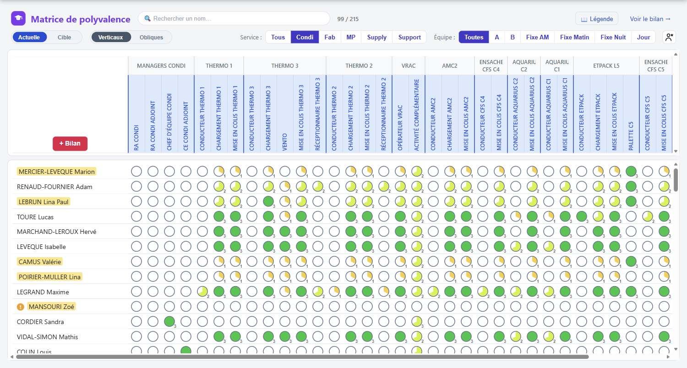
Les niveaux
| Pastille | Niveau | Ce que cela veut dire |
|---|---|---|
| 0 | Non formé / non compétent. | |
| 1 · Junior | Réalise les opérations courantes sur ligne avec supervision. | |
| 2 · Confirmé | Maîtrise la conduite de ligne en autonomie et gère les aléas courants. | |
| 3 · Expert | Référence technique, optimise les performances et accompagne la montée en compétences des équipes. | |
| Restriction | La personne ne doit pas tenir ce poste (restriction médicale ou physique). On n'écrit jamais pourquoi. Elle est exclue des bilans et signalée au Planning. |
Les libellés ci-dessus sont ceux du Bignon. Ils se règlent dans Compétences et peuvent différer d'un site à l'autre : le bouton 📖 Légende de la Matrice affiche ceux de votre site, qui font foi.
Saisir un niveau
- Clic sur une case : le niveau monte d'un cran (0 → 1 → 2 → 3 → restriction → 0).
- Clic droit : il redescend d'un cran.
- Chaque clic s'enregistre aussitôt. Au survol, une info-bulle rappelle la personne, le poste, le niveau actuel et la cible.
Actuelle et Cible
La bascule Actuelle / Cible passe d'une matrice à l'autre. Actuelle = la situation d'aujourd'hui (bleu) ; Cible = le niveau visé, par exemple dans un an (vert). L'écart entre les deux devient le plan de formation des bilans.
- Le petit chiffre en haut à droite d'une case rappelle l'autre matrice : en Actuelle, c'est la cible ; en Cible, c'est le niveau actuel.
- Quand on monte l'actuel, la cible suit si elle était au même niveau ; une cible fixée plus haut volontairement est gardée. La cible n'est jamais en dessous de l'actuel.
Trouver et filtrer
- Service et Équipe limitent les lignes et les colonnes ; le bouton à l'icône de personne, au bout des filtres (« Filtre Conducteurs »), ne garde que les personnes compétentes sur au moins un poste de conducteur.
- La recherche cherche dans tout l'effectif, même hors des filtres.
- Clic sur l'en-tête d'un poste (ou d'une ligne) : ne garde que les personnes compétentes sur ce poste. Un bandeau « Filtré : … » permet de retirer le filtre.
- Un « ! » orange devant un nom : personne active sans aucune compétence nulle part — une piste de formation. Une étiquette « À venir » signale une personne recrutée pas encore arrivée.
- Verticaux / Obliques : les noms de poste s'écrivent à la verticale, ou en bandes inclinées plus faciles à lire, colorées par ligne de production. Le choix n'est pas mémorisé.
- Voir le bilan → ouvre le bilan de la matrice : par poste, combien de personnes atteignent le niveau requis, et la répartition par niveau. Imprimable.
Les postes en zone d'attente (CDT…) n'y figurent pas : on n'y mesure pas de compétence. Sans filtre de service, la matrice affiche plusieurs milliers de cases : filtrez sur votre service, c'est plus rapide et plus lisible.
9. Habilitations
Le même principe que la matrice, mais pour les formations : une ligne par personne, une colonne par formation, regroupées par catégorie (réglementaire ou interne) puis par groupe (Sécurité, Qualité, Conduite d'engins…). La pastille dit où en est la validité.
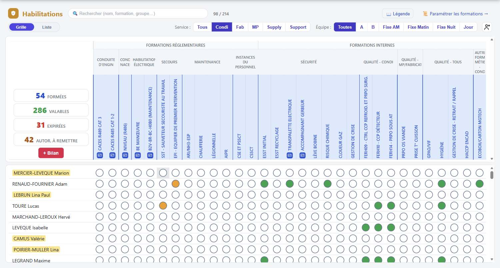
- valable
- bientôt dépassée — moins de 90 jours avant l'échéance : à replanifier
- expirée
- jamais passée
- supprimée (grisée : l'historique est gardé)
Enregistrer un passage
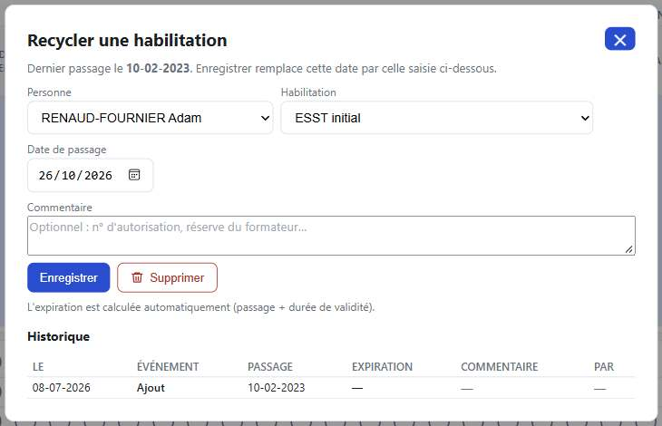
- Cliquez la pastille de la personne pour la formation. La fenêtre s'ouvre avec la personne et la formation déjà choisies.
- Saisissez la date de passage : la vraie date de la formation, même si vous la saisissez des semaines plus tard. Polaris calcule l'échéance à partir de cette date et de la durée de validité de la formation.
- Pour une formation soumise à autorisation, une case Autorisation · remise apparaît : cochez-la quand le document signé par le site a été remis (sa date est celle du passage).
- Commentaire (facultatif) : numéro d'autorisation, réserve du formateur (« questionnaire à revoir à l'oral »…).
- Enregistrez : la pastille passe au vert. Un recyclage se saisit de la même façon : nouvelle date de passage sur la même pastille, l'ancienne reste dans l'historique.
Retirer une habilitation
Une personne qui ne doit plus exercer (ne veut plus être équipier de première intervention, a perdu sa confiance sur un CCP…) : ouvrez la pastille et supprimez. La pastille devient grisée au lieu d'être rouge — on ne la compte plus comme « en écart » — mais rien n'est perdu : la fenêtre de la pastille affiche son historique : chaque passage, chaque suppression, avec la date et l'auteur. C'est ce qui permet de prouver, lors d'un audit, qu'une personne était formée à une date donnée.
Les vues et le bilan
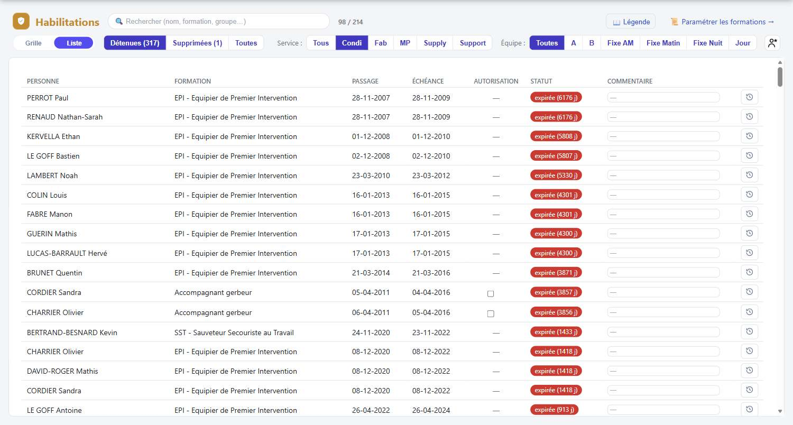
- Grille / Liste : la liste donne une ligne par habilitation (personne, formation, passage, échéance, autorisation, statut, commentaire modifiable sur place), les plus anciennes échéances d'abord — pratique pour programmer les sessions. Elle se filtre en Détenues, Supprimées ou Toutes ; le bouton en bout de ligne ouvre l'historique.
- Les compteurs du coin de la grille : personnes formées, habilitations valables, expirées, autorisations à remettre ; le bouton Bilan les détaille formation par formation.
- Clic sur un en-tête (catégorie, groupe ou formation) : ne garde que les personnes habilitées.
- Service, Équipe, Conducteurs et la recherche (nom, formation, groupe) fonctionnent comme dans la matrice.
- 📜 Paramétrer les formations → (si vous en avez le droit) : la liste des formations, leur groupe, leur catégorie et leur durée de validité en mois. Voir Param. Habilitation. Pour la liste des personnes à recycler et son export Excel, voir le bilan Recyclages à prévoir.
Seules les habilitations exigées par le poste (colonne « Habil. requises » du Référentiel) sont contrôlées au placement : sans elles, Polaris demande confirmation, et un placement forcé reste encadré de rouge. Ce rouge est recalculé à chaque affichage d'après l'état d'aujourd'hui : dès qu'une formation est saisie, le rouge disparaît de toutes les cases de la personne sur ce poste, y compris sur les jours passés ; et il apparaît partout le lendemain d'une expiration.
10. Ordonnancement
L'Ordonnancement dit, jour par jour, quels quarts travaillent et quelles lignes tournent. C'est de là que viennent le besoin en personnes et les jours ouverts du Planning. Toute mise à jour se voit aussitôt au Planning et au Placement. En consultation, c'est le moyen de savoir si une ligne sera disponible demain.
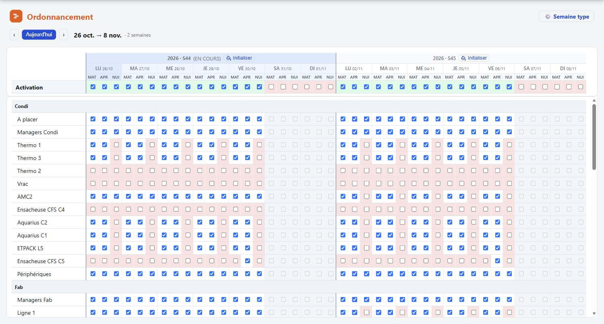
- ‹ Aujourd'hui › et la période affichée (deux semaines) ; Semaine type, en haut à droite, ouvre le gabarit.
- En tête de chaque semaine, Initialiser applique une semaine type ; chaque jour est découpé en quarts (MAT, APR, NUI).
- Activation : le quart travaille-t-il ce jour ? Coché = actif. Ici le samedi et le dimanche sont inactifs.
- Une case par ligne, par jour et par quart : cochée = la ligne tourne ; décochée (fond rouge) = fermée. Une case grise et vide : la ligne ne tourne pas sur ce quart (Référentiel), ou le quart est inactif ce jour-là.
Ce que voient le Planning et le Placement
- Quart inactif (ou semaine non initialisée) : la colonne du jour est fermée au Planning avec le message « Jour sans production — pour l'activer, contacter l'ordo » ; aucune saisie possible.
- Ligne fermée : son besoin tombe à 0, mais elle reste visible et plaçable. On peut y passer un produit, faire une reprise : au Placement, la ligne porte la mention « fermée par ordo » et ses postes demandent 0 personne (« 0/0 ») ; une personne qui y est placée met le poste en sureffectif (cadre orange, « 1/0 »). Si des gens y sont placés, c'est un signal que l'ordonnancement n'est peut-être pas à jour, ou qu'il y a une reprise.
- Journée : le quart de journée (pleine journée) est actif automatiquement dès qu'un quart tourne ce jour-là. Une ligne qui ne tourne sur aucun quart posté n'apparaît que dans cette partie.
- Le besoin suit l'activation : ouvrir deux lignes au lieu de trois réduit d'autant le besoin calculé dans les bilans.
La semaine type
La semaine type est le gabarit habituel (quels quarts, quelles lignes, quels jours). L'écran Semaine type permet d'en avoir plusieurs (profils : normale, réduite, été…) : ＋ Nouveau, Renommer, Supprimer, Définir par défaut. Sur une semaine du calendrier, ⚙️ Initialiser propose d'appliquer le profil voulu (ou Appliquer le défaut), puis on ajuste à la main les exceptions.
Modifier une semaine type n'affecte pas les semaines déjà initialisées : pour répercuter un changement, réinitialisez la semaine concernée.
Fermer une ligne ou un quart où des personnes sont déjà placées ne les retire pas : elles apparaissent en sureffectif au Planning et au Placement, et une fenêtre « Prévenir le service » liste les personnes et les services à avertir pour qu'ils adaptent leur planning. Réinitialiser une semaine occupée demande confirmation (⚠ Semaine occupée) : « Réinitialiser quand même et retirer » efface alors les affectations concernées.
11. Planning
Le Planning montre trois semaines d'un coup : la semaine choisie à gauche, puis les deux suivantes. Une ligne par personne, une colonne par jour, et dans chaque case le code du poste tenu, un motif d'absence, ou rien. Il sert à construire et corriger les semaines à venir ; le Placement sert ensuite à détailler le jour J. On y retrouve aussi le passé : une semaine d'il y a deux mois montre ce qui a réellement été saisi, absences comprises.
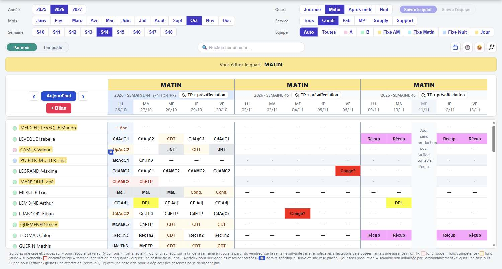
- Se déplacer dans le temps, en haut à gauche : l'année, le mois, la semaine (S40, S41…). ‹ Aujourd'hui ›, à gauche de la grille, avance ou recule d'une semaine et ramène à la semaine en cours (bleue).
- Quart, Service, Équipe, en haut à droite. En équipe Auto, on voit les équipes de ce quart cette semaine et toute personne réellement placée sur ce quart. Suivre le quart / Suivre l'équipe s'active quand une équipe tournante est choisie.
- Par nom / Par poste, la recherche, puis les raccourcis : écran TV, horaires spécifiques, absences, filtre Conducteurs.
- Le bandeau « Vous éditez le quart MATIN », puis en tête de chaque semaine le quart (en couleur) et le bouton TP + pré-affectation.
- + Bilan déplie les lignes de besoin et d'alertes. Au pied de la grille, un rappel des couleurs et des gestes.
Lire une case
| Ce que vous voyez | Ce que cela veut dire |
|---|---|
| fond rouge clair | Hors compétence : niveau inférieur au minimum du poste (texte bordeaux). |
| encadré rouge | Placement forcé : il manque une habilitation exigée par le poste. L'info-bulle dit laquelle. |
| fond jaune | Sur-effectif : plus de personnes que l'effectif requis sur ce poste ce jour (texte marron). |
| ✕ petite croix rouge | Restriction médicale ou physique sur ce poste. |
| couleur du motif | Une absence (CP, maladie, formation…), avec la couleur choisie dans Param. RH. |
| TP violet | Temps partiel : journée non travaillée. Calculé, ou posé par le pré-remplissage (et alors déplaçable). |
| · gris | Hors effectif : aucun contrat ce jour-là (avant l'arrivée, après le départ, entre deux missions). |
| « → Après-midi » | La personne est déjà placée sur un autre quart ce jour-là (l'info-bulle donne le poste). |
| 🕐 | Un horaire spécifique ou un commentaire est posé ce jour-là. |
| fond bleuté | Aujourd'hui. |
| nom en jaune | Intérimaire. |
Saisir
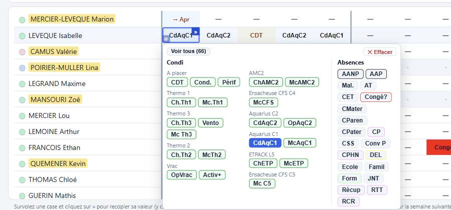
- Clic sur une case : une petite fenêtre propose les postes ouverts ce jour-là, d'abord ceux où la personne est compétente (Voir compétents / Voir tous), puis les motifs d'absence en pastilles. ✕ Effacer vide la case. Tout s'enregistre aussitôt.
- Habilitation manquante : si le poste exige une formation que la personne n'a pas, Polaris demande confirmation. Forcer laisse la case encadrée de rouge, avec la trace de qui a forcé et quand.
- Un poste ne peut être posé que sur un quart où il tourne, et jamais un jour hors contrat : Polaris refuse avec un message.
- La flèche », au bout d'une case, recopie le poste (ou le NT) jusqu'à la fin de la semaine (ou sur la semaine suivante si on est en fin de semaine). Elle remplace les affectations déjà posées, mais jamais une absence ni un temps partiel. Sur une case vide, elle vide la suite (absences et TP gardés).
- La flèche » d'un jour, en en-tête, fait la même chose pour tous les membres affichés de l'équipe choisie (pas en AUTO).
- Glisser-déposer : attrapez un poste, un NT ou un TP et déposez-le sur une case vide (d'un autre jour, ou d'une autre personne). Les contrôles d'habilitation s'appliquent à l'arrivée.
- La pendule 🕐 d'une case affectée ouvre l'horaire spécifique du jour (début, fin, commentaire), avec l'horaire par défaut en rappel. Sa flèche » recopie l'horaire sur les mêmes jours que la recopie de la case.
Charger une semaine : TP + pré-affectation
En tête de chaque semaine, le bouton TP + pré-affectation prépare la semaine d'un coup, sans jamais écraser une case déjà remplie :
- il pose les temps partiels (en cases « TP » déplaçables) ;
- puis il place chaque titulaire sur son poste fixe, du lundi au vendredi, sur le quart de son équipe (ou en journée pour un poste de journée) et sur sa place habituelle s'il y a des numéros de rotation ;
- il ne force jamais une habilitation manquante ; les personnes qu'il n'a pas pu placer sont listées dans le message de fin. La vue se recharge ensuite.
Suivre le quart ou suivre l'équipe
Suivre le quart (par défaut) : les trois semaines montrent le même quart, avec les équipes qui le tiennent chaque semaine. Suivre l'équipe (une équipe tournante choisie) : chaque semaine prend le quart de l'équipe — matin, puis après-midi, puis matin… — ce qui se lit plus naturellement pour une équipe. Une bande colorée en tête de chaque semaine rappelle le quart.
En AUTO, le planning d'un quart affiche les équipes de ce quart, mais aussi les personnes déjà placées dessus. Et une personne peut être déplacée d'un quart à l'autre une semaine donnée : c'est pour cela que toutes les personnes restent accessibles. Une case « → Après-midi » indique qu'elle est déjà sur l'autre quart ce jour-là.
Le bilan et les alertes
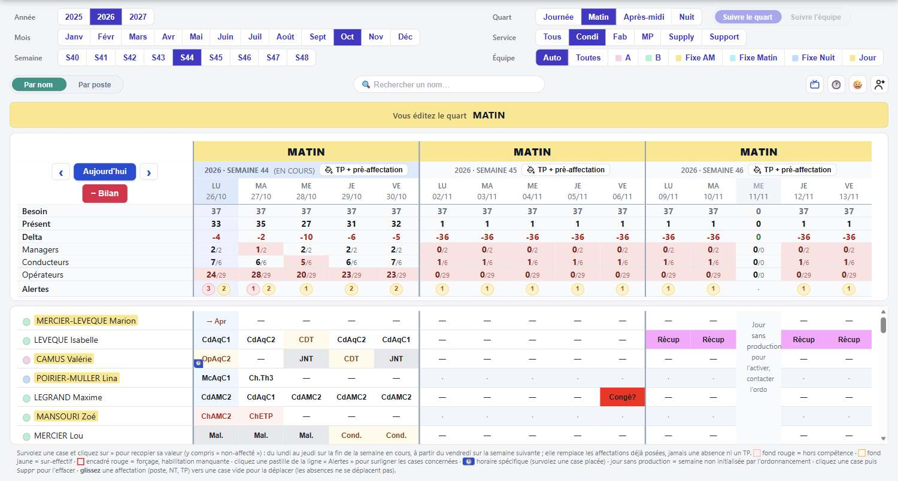
+ Bilan déplie, en tête de grille, pour chaque jour : le Besoin, les Présents, le Delta, puis présents sur requis par catégorie (managers, conducteurs, opérateurs), et les Alertes : pastille rouge = cases hors compétence, pastille jaune = postes en sur-effectif. Un clic sur une pastille surligne les cases concernées ce jour-là. Le bouton devient « − Bilan » pour replier.
La vue « Par poste »
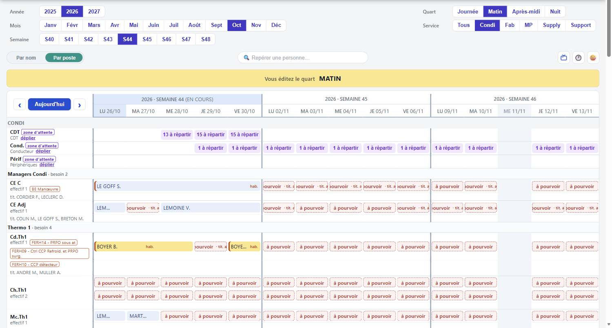
La bascule Par nom / Par poste retourne la grille : une ligne par place de poste (un poste à effectif 3 occupe trois lignes), sur un seul quart. C'est la vue pour répondre à « qui était au chargement de la Thermo 1 mardi ? ». Une personne qui tient la même place plusieurs jours forme une seule barre ; le titulaire est en gras, l'intérim en jaune ; les habilitations exigées sont rappelées à côté du poste.
- Une place vide requise est marquée « à pourvoir » en rouge (« tit. abs. » si le titulaire est indisponible). Cliquez-la : les candidats s'affichent, triés — personnes en zone d'attente, puis disponibles et compétentes, puis celles à qui il manque le niveau ou une habilitation, puis celles déjà placées ailleurs sur ce quart (déplacement après confirmation). Une personne absente, en temps partiel ou hors effectif n'est jamais proposée : une absence ne s'écrase pas depuis cette vue.
- La flèche » au bout d'une barre prolonge la personne jusqu'à la fin de la semaine ; les jours impossibles sont sautés et listés.
- Clic sur un nom : le remplacer, le retirer ce jour ou jusqu'à la fin de la semaine, ou surligner toutes ses places.
- « + ajouter », au survol d'un poste, place quelqu'un en surnombre.
Un poste en zone d'attente s'affiche replié « N à répartir » en tête de son service ; un clic le déplie. Le pied de grille donne, jour par jour, la couverture, le nombre de personnes à répartir et les non placés.
Les raccourcis en haut à droite
- 📺 — l'écran TV du service filtré ;
- 🕐 — l'écran des horaires spécifiques ;
- 🤒 — l'écran Absences, filtré sur le même service et la même recherche ;
- l'icône de personne — le filtre Conducteurs (ne garde que les personnes compétentes sur un poste de conducteur).
12. Placement
Le Placement prépare une journée, un quart, un service : le plan des lignes et des postes à gauche, la liste des personnes à droite, les motifs d'absence en bas. Les conducteurs et les titulaires sont souvent déjà là (Planning, pré-remplissage) ; reste à répartir les autres opérateurs, en glissant les noms sur les postes. C'est la feuille qui est imprimée et affichée dans le couloir.
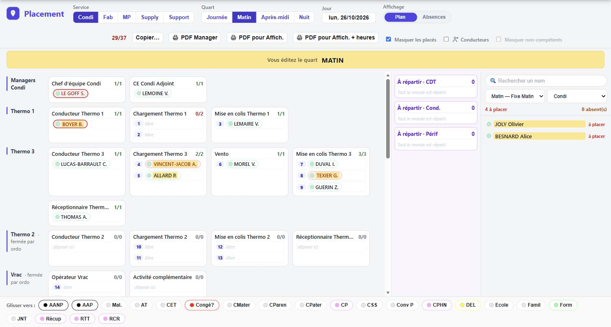
- En haut : Service, Quart, Jour (le calendrier grise les jours sans quart actif) et Affichage Plan / Absences.
- Deuxième ligne : le compteur de couverture (positions pourvues / requises, rouge tant qu'il manque du monde), Copier…, les trois PDF, puis les cases Masquer les placés, Conducteurs et Masquer non-compétents.
- Le plan : une ligne par ligne de production, une tuile par poste avec son compteur (« 2/2 ») et ses places numérotées. Une ligne fermée dans l'Ordonnancement porte la mention « fermée par ordo » et ses postes passent à 0.
- À répartir (colonne violette) : les zones d'attente (CDT, conducteurs, périphériques) et les personnes qui y sont rangées.
- La liste : recherche, équipe et service, « N à placer » et « N absent(s) », puis les noms avec leur statut.
- Glisser vers, en bas : les motifs d'absence. Déposez-y un nom pour déclarer une absence ce jour-là.
Placer et retirer
- Glisser-déposer : attrapez le nom dans la liste (ou sur le plan) et lâchez-le sur la case voulue.
- Cliquer-cliquer : cliquez le nom (il s'entoure), puis la case. Plus pratique sur tablette.
- Pendant qu'une personne est attrapée ou sélectionnée, les postes se colorent : vert compétente, grisé niveau insuffisant, rouge restriction. Cochez Masquer non-compétents pour ne garder que les postes où elle est compétente.
- Retirer quelqu'un : la croix ✕ à côté de son nom dans la liste.
- Déplacer quelqu'un d'un poste à un autre : glissez-le simplement sur la nouvelle case.
Les confirmations
⚠ Habilitation manquante
LEFEBVRE Tom n'est pas habilitée pour le poste Conducteur Thermo 2.
Manque : CCP détecteur (expirée depuis 12 j)
Un placement forcé est tracé (auteur et date) et s'affiche en rouge tant que l'habilitation n'est pas régularisée.
⚠ Absence ce jour-là
Attention : ROUX Sofia a un motif d'absence sur cette journée (Congés payés).
Êtes-vous sûr de vouloir la placer sur le poste Chargement Thermo 1 ?
Le poste remplace l'absence pour cette journée seulement.
- Habilitation manquante — le poste exige une formation absente ou expirée.
- Absence ce jour-là — la personne a un motif d'absence (ou un « Non travaillé ») ce jour : la placer remplace l'absence de cette journée.
- Déjà placé sur un autre quart — proposé de la retirer de l'autre quart et de la placer ici.
- À vérifier avec les RH — un point de suivi médical est à vérifier, sans autre détail (le motif reste confidentiel). Le placement reste possible si vous avez vérifié.
Copier une journée
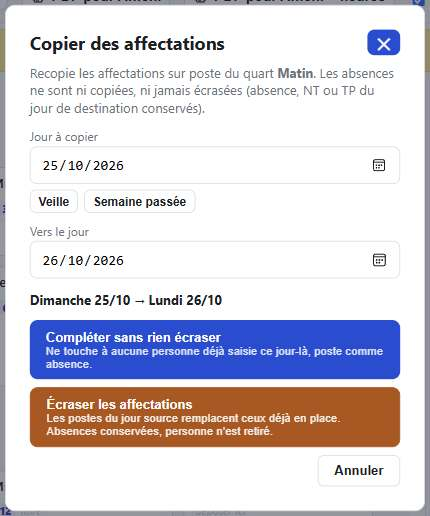
Copier… recopie les affectations d'un jour vers un autre, sur le quart affiché et pour tout le site. Deux raccourcis : Veille et Semaine passée. Deux façons :
- Compléter sans rien écraser — ne touche à aucune personne déjà saisie ce jour-là ;
- Écraser les affectations — remplace les postes déjà posés, sans retirer personne.
Les absences, NT et TP du jour de destination ne sont jamais touchés ; une personne partie, ou un poste qui ne tourne pas ce jour-là, ne sont pas recopiés (le message de fin les compte).
La liste des noms
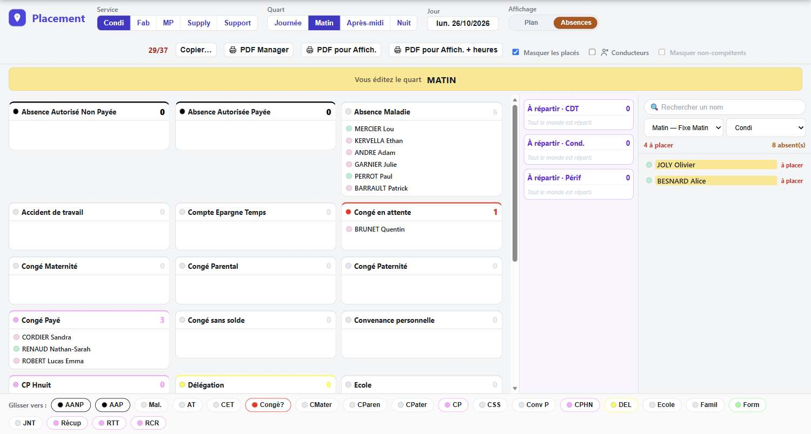
- L'affichage Absences remplace le plan par une carte par motif (plus « Temps partiel ») avec les absents du jour : on peut aussi y déposer un nom.
- Préfiltrée sur l'équipe et le service du plan. Taper un nom cherche dans tout l'effectif, pour aller chercher un renfort ailleurs. Les personnes sans équipe (intérim, nouveaux) sont toujours montrées.
- Masquer les placés (coché par défaut) ne garde que ceux qui restent à placer ; il ne s'applique pas pendant une recherche. Conducteurs ne garde que les personnes compétentes sur un poste de conducteur.
- Placés hors plan : une personne placée sur ce quart sur un poste qu'aucun plan ne dessine (poste qui ne tourne pas sur ce quart, désactivé, fermé) apparaît toujours en tête, avec « ⚠ » et la raison. Retirez-la ou glissez-la sur un poste du plan.
- À répartir : les personnes rangées dans une zone d'attente (CDT…) apparaissent dans une colonne violette entre le plan et la liste ; glissez-les vers les postes.
Imprimer
Trois sorties, toutes ajustées pour tenir sur une page (paysage ou portrait, ce qui imprime le plus grand) :
- PDF Manager (A4) — le plan, avec le surnombre et le hors compétence en couleur, et la colonne « Absents / TP du jour ».
- PDF pour Affich. (A3) — la feuille du couloir : le plan, chaque ligne qui tourne dans sa couleur (les lignes à l'arrêt en gris), les numéros vides et les commentaires du jour, et les absents des seuls motifs cochés « PDF pour Affich. » dans Param. RH. Sous le nom d'une personne en Formation, le sujet de la formation.
- PDF pour Affich. + heures — la même feuille avec l'horaire de chacun au poste.
Les postes réglés « Impr. : Non » au Référentiel n'y figurent pas. Le bouton ouvre la fenêtre d'impression du navigateur : choisissez l'imprimante, ou « Enregistrer au format PDF ».
Un chef d'équipe ne modifie que les personnes de son équipe : les autres apparaissent grisées, visibles mais non déplaçables. Un message le rappelle si on essaie.
13. Bilans
Les bilans se lisent, ils ne se saisissent pas : ils agrègent ce que contiennent les autres modules à l'instant où on les ouvre. Une donnée corrigée dans la Matrice ou les Habilitations s'y répercute aussitôt. Ils sont conçus pour être imprimés (« Imprimer / PDF » ou l'icône d'imprimante ouvrent l'impression du navigateur ; dans les Synthèses et les Recyclages, PDF et Excel téléchargent directement un fichier) ou projetés en réunion, et la plupart se filtrent par service et par équipe.
Le Cockpit — pilotage d'équipe
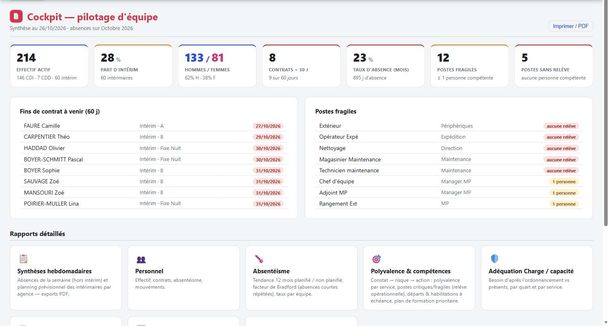
La page d'entrée du menu Bilans : effectif actif, part d'intérim, hommes / femmes, contrats qui se terminent dans 30 jours, taux d'absence du mois, postes fragiles et postes sans relève ; puis la liste des fins de contrat à 60 jours et des postes fragiles, et en bas l'accès aux rapports détaillés. Le service et le quart choisis sont transmis aux rapports (bandeau « Filtres repris »).
Les rapports détaillés
| Rapport | Ce qu'il montre |
|---|---|
| 📋 Synthèses hebdomadaires | Deux vues. Absences : les absences des 4 semaines à venir (hors intérim), avec un récapitulatif par motif. Intérim : le planning de la semaine des intérimaires, par agence, avec le poste, le service et l'horaire de chaque jour ; puis, par agence, les intérimaires sans affectation cette semaine (aucune ligne au Planning : ni poste, ni JNT, ni absence) et sous contrat — ceux à ne pas faire venir. Les boutons PDF et Excel téléchargent directement le fichier ; chaque agence a aussi les siens, pour lui envoyer son planning. |
| 👥 Personnel | Effectif et contrats (CDI, CDD, intérim), répartition par équipe et par service, fins de contrat à 90 jours, absentéisme du mois par motif, entrées et sorties du mois (hors intérim). |
| 🌡️ Absentéisme | Tendance sur 12 mois glissants, planifié / non planifié ; facteur de Bradford (absences courtes et répétées) ; taux non planifié par équipe. |
| 🎯 Polyvalence & compétences | En quatre temps : constat (polyvalence moyenne par service, personnes à développer), postes (couverture et fragilité : combien de personnes tiennent vraiment chaque poste, niveau et habilitation compris ; postes critiques, fragiles ; PTNR à part), risques (personnes clés sur le départ, habilitations à échéance), qui former sur quel poste (écart actuel → cible). |
| 🛡️ Adéquation charge / capacité | Sur un mois, par service et par quart : le besoin (d'après l'ordonnancement) face aux présents ; jours sous-couverts ; placements hors compétence. |
| 🧑🏭 Assez de compétences ? | Une aide pour valider les congés : sur 2 semaines, par service et par jour, les postes tenables une fois retirés les absents, les temps partiels et les fins de contrat — sans compter deux fois une personne polyvalente. |
| 🗺️ Projection de compétences | La feuille de route sur 24 semaines : par service et par catégorie, combien de personnes tiennent au moins un poste (titulaires et intérim séparés), face au besoin actualisé par l'ordonnancement. Absences d'une semaine pleine, expirations d'habilitation et fins de contrat sont déduites. |
| 🔁 Recyclages à prévoir | Par formation, les personnes actives dont l'habilitation expire ou a expiré : formation, nom, prénom, service, équipe, dernier passage, date d'expiration, jours restants. Filtres : formations réglementaires / internes / non classées, une formation précise, l'échéance (expirées, 30 j, 90 j, 6 mois, 1 an, toutes), service, équipe. Une fin de contrat antérieure à l'échéance est signalée, et un bandeau liste les formations sans durée de validité (jamais échues). Boutons Excel et PDF pour extraire la liste affichée. |
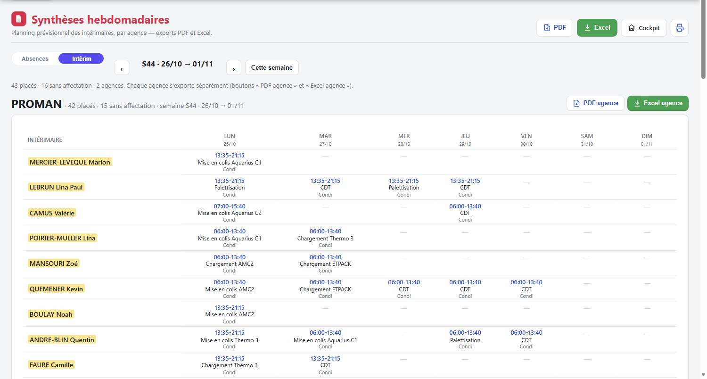
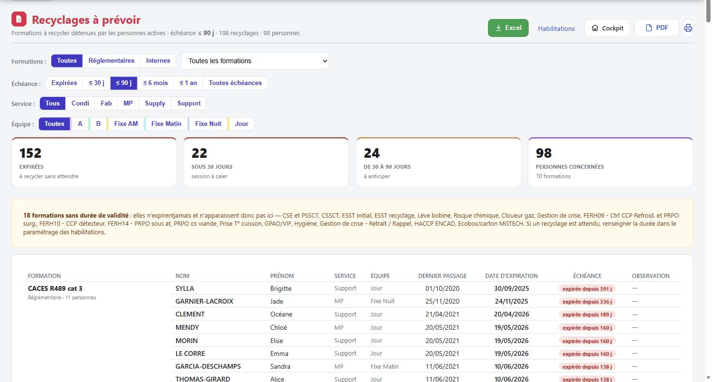
Le bilan de la matrice (bouton « Voir le bilan » de la Matrice) complète ces rapports : par poste, le nombre de personnes à chaque niveau et au niveau requis.
Les besoins viennent de l'effectif requis du Référentiel (la marche normale) et des lignes ouvertes à l'Ordonnancement. Ils ne connaissent pas les produits : une production qui demande plus ou moins de monde n'y est pas. Lisez ces écarts comme des ordres de grandeur, et tenez le Référentiel et l'Ordonnancement à jour pour qu'ils soient justes.
14. Affichage TV
Chaque service a une page d'affichage pour un écran de couloir : gros caractères, en sections Matin / Après-midi / Nuit, une ligne par personne et une colonne par jour, avec dans chaque case le poste tenu et l'horaire (ou « Absence », « TP »). En haut : la semaine affichée (‹ ›), l'impression A3 et le logo. C'est la seule partie de Polaris accessible sans se connecter : ouvrez-la sur le poste relié à la TV, passez le navigateur en plein écran, et laissez-la tourner.
- Mise à jour : toutes les 5 minutes, la page vérifie si quelque chose a changé et ne se recharge que dans ce cas, ainsi qu'au changement de jour.
- La fenêtre affichée (par exemple de la veille à quatre jours devant) se règle dans Param. RH.
- Légende : intérimaire en jaune, aujourd'hui en vert, horaires en bleu, absence en rouge, TP en violet, « (Service X) » en orange = personne prêtée par un autre service.
- Une personne apparaît sur la TV de son service d'affectation (fiche Personnel).
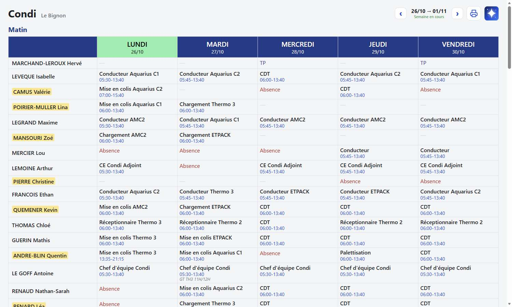
Le menu Affichage : imprimer plusieurs services
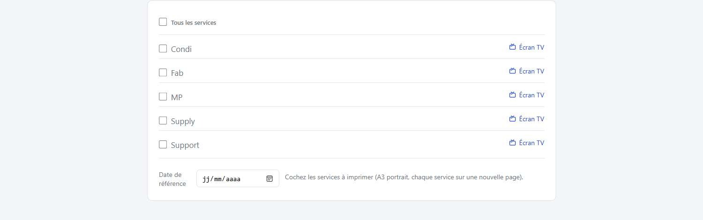
Le menu Affichage liste les services avec une case à cocher. Cochez ceux à imprimer (ou tous), choisissez au besoin une date, puis imprimez : chaque service commence sur une nouvelle feuille A3 portrait. Le lien Écran TV de chaque ligne ouvre la page d'un seul service. La date de référence (vide = aujourd'hui) choisit la semaine imprimée. Depuis le Planning, le bouton 📺 ouvre directement la TV du service filtré.
15. Visites médicales
Le suivi des visites médicales du travail : des dates et des types de visite, jamais d'information médicale. Le module n'apparaît que pour les comptes qui y ont droit ; il peut aussi être masqué pour tout un site.
- Suivi : une ligne par salarié, avec sa dernière visite, son régime de suivi (simple, adapté, renforcé) et la prochaine visite due. Le régime n'est jamais saisi : Polaris le calcule à partir des quarts de nuit, des postes tenus et des habilitations détenues, et dit toujours pourquoi. La fiche d'une personne enregistre les visites (médecin et/ou infirmière, faite ou prévue, avis) et les attestations délivrées.
- Paramètres : les régimes et leurs plafonds, les déclencheurs (quarts de nuit, postes à risques particuliers, habilitations, motifs d'absence donnant lieu à une visite de reprise), le catalogue des visites et les alertes.
- Les intérimaires sont suivis par leur agence : ils sont exclus du module.
- Seule chose visible ailleurs : au Placement, un avertissement « À vérifier avec les RH », sans motif, si les RH ont activé ce contrôle.
16. Journal
Le journal enregistre qui a modifié quoi, et quand : placements, fiches, absences, niveaux de la matrice, habilitations, réglages, droits. Chaque ligne donne la date et l'heure, l'auteur, l'élément concerné (personne, jour, poste…), le type d'action et la valeur avant et la valeur après.
- Filtres : recherche (personne, poste, habilitation…), période (du… au…), Auteur (dont « Système » pour les calculs automatiques), Élément (le type de donnée) et Action (création, modification, suppression, opération groupée).
- Opérations groupées (copie de journée, pré-remplissage, réinitialisation, imports) : une seule ligne de synthèse, dont on peut afficher le détail.
- Le Planning et la Polyvalence, qui font l'essentiel du volume, sont masqués par défaut (sauf leurs opérations groupées) : cochez Inclure le Planning et la Polyvalence pour les voir.
- 100 lignes par page, Plus anciens → pour remonter. Les entrées sont conservées le nombre de mois indiqué en haut de l'écran (Conservation : N mois · Enregistrer, pour qui peut modifier le Journal) ; une personne anonymisée ou supprimée au titre du RGPD l'est aussi du journal.
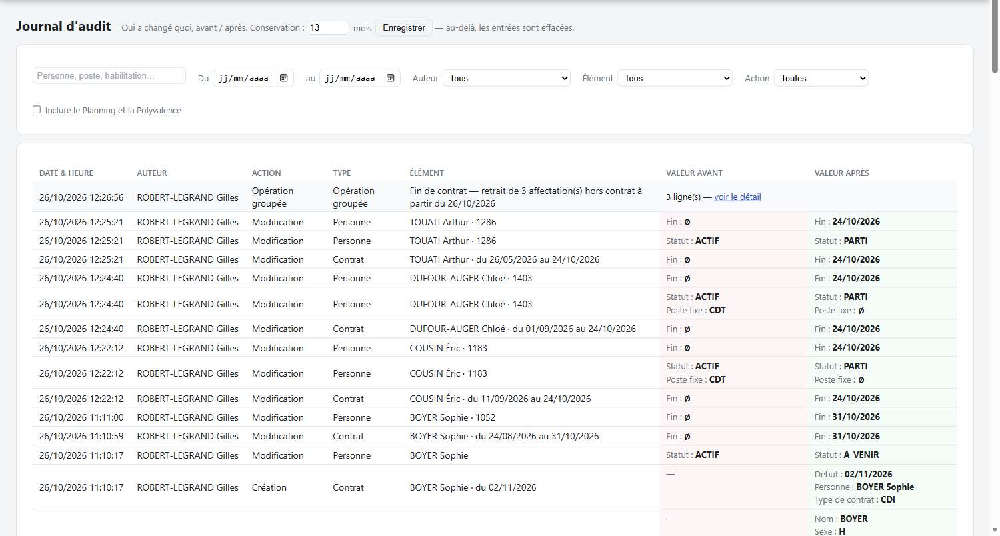
C'est l'écran à ouvrir quand une donnée a changé sans qu'on sache pourquoi : on y lit l'ancienne valeur, et on la ressaisit.
17. Réglages
Regroupés sous l'engrenage ⚙️, chacun avec son propre droit. Ils s'ouvrent en consultation seule pour qui n'a que la lecture.
Référentiel
Services, lignes, postes : voir la section Référentiel.
Équipes
- Nouvelle équipe (nom, couleur, Ajouter) ; pour chaque équipe : nom, couleur (celle des pastilles partout dans Polaris), Quart fixe (« Rotation (tourne) » ou un quart fixe), Actif.
- Chefs d'équipe : les comptes rattachés à chaque équipe (Désigner un chef, Retirer). C'est ce qui donne à un chef d'équipe son périmètre de modification.
- Rotation — référence d'une semaine : pour une semaine (« à partir du » lundi choisi), le quart de chaque équipe tournante ; les semaines suivantes en découlent (aperçu sous le formulaire). Pour changer la rotation, on ajoute une nouvelle référence à une autre date : les références enregistrées restent, et le passé n'est jamais recalculé.
- Horaires des quarts : pour chaque quart, le libellé, le début et la fin, s'il fait partie de la rotation, s'il s'agit d'une nuit, son créneau pour le temps partiel et la couleur de son bandeau ; bouton « Enregistrer les horaires ».
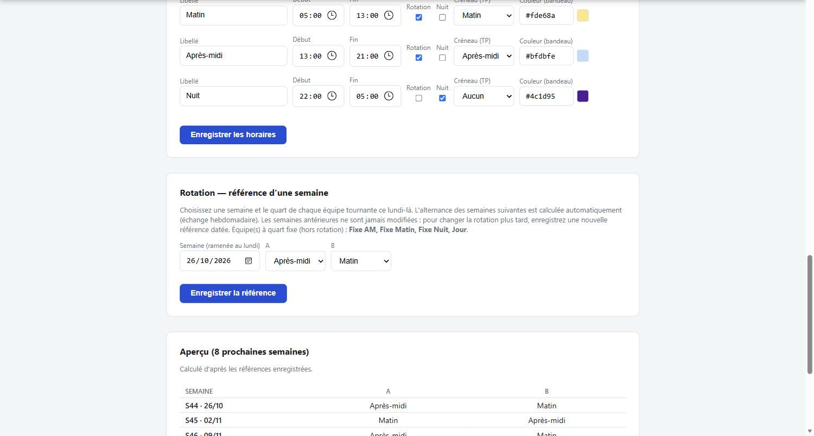
Compétences
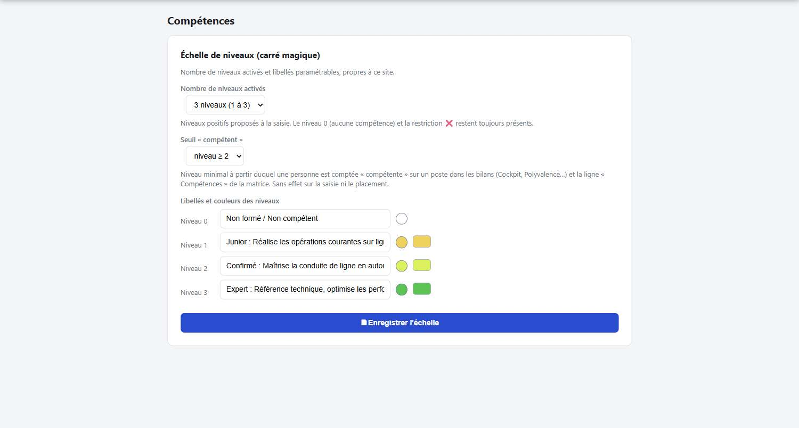
Le nombre de niveaux activés, le seuil « compétent » (le niveau à partir duquel une personne compte comme compétente dans les bilans, sans effet sur la saisie ni le placement), et l'échelle de niveaux de la matrice : le libellé et la couleur de chaque niveau (le niveau 0 reste toujours blanc). C'est ici qu'on réécrit, par exemple, la définition du niveau 1 si elle prête à confusion.
Param. Habilitation
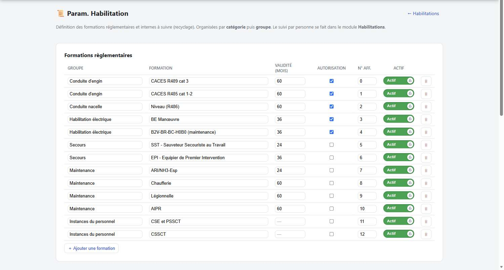
La liste des formations, également accessible par « 📜 Paramétrer les formations » depuis les Habilitations :
- Formation (libellé), Groupe (Sécurité, Qualité, Conduite…), catégorie réglementaire ou interne, N° aff. (ordre des colonnes) ;
- Validité (mois) : la durée avant recyclage. Vide = la formation n'expire jamais (elle n'apparaîtra jamais « à recycler »). L'alerte orange arrive 90 jours avant l'échéance ;
- Autorisation : la formation est suivie d'une autorisation du site (conduite d'engins, habilitation électrique…), à cocher comme « remise » sur chaque personne ;
- Actif : décocher retire la formation des écrans sans effacer l'historique.
Param. RH
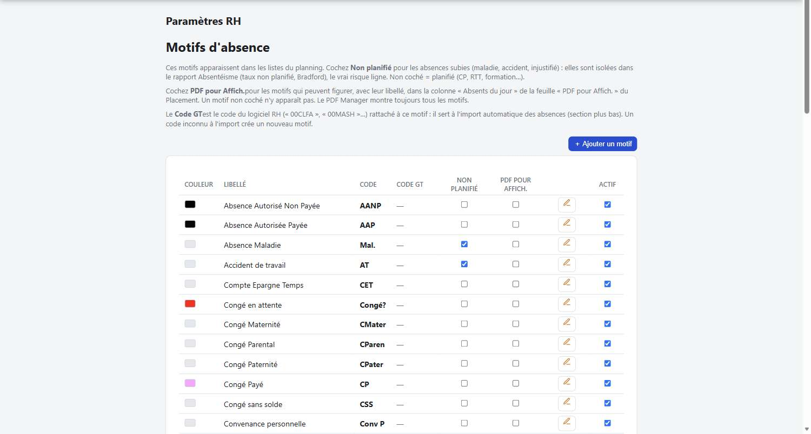
- Motifs d'absence : code court (affiché dans les cases), code GT (paie), libellé, couleur, ordre, non planifié (compte dans l'absentéisme non planifié et le facteur de Bradford), PDF pour Affich. (le motif apparaît dans la colonne des absents de la feuille du couloir), actif.
- Agences d'intérim : la liste proposée à la saisie d'un contrat.
- Types de contrat : CDI, CDD, intérim… ; un type marqué « avec agence » fait apparaître le champ Agence et le surlignage jaune.
- Fenêtre d'affichage du planning : les jours montrés par l'écran TV.
- Import des absences depuis le logiciel RH : un fichier est lu, chaque nom est rapproché d'une personne Polaris, on vérifie, puis on importe.
Horaires
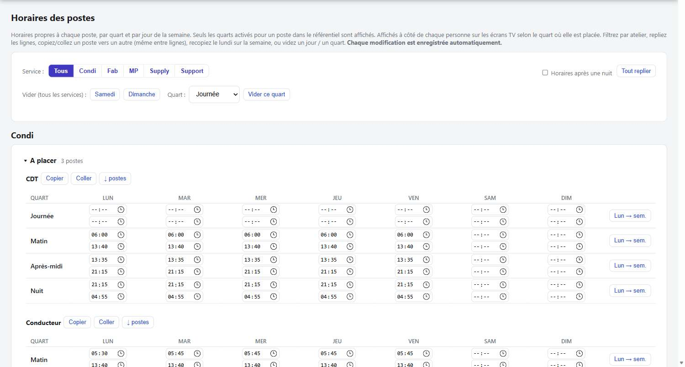
Les horaires standard de chaque poste, par service, quart et jour de la semaine, avec :
- une variante « après une nuit », appliquée le lendemain d'une nuit où la ligne a tourné (vide = même horaire) ;
- des horaires par place (n° de rotation), qui l'emportent sur ceux du poste ;
- des raccourcis : Lun → sem. recopie le lundi sur toute la semaine ; Copier / Coller reportent les horaires d'un poste sur un autre ; ↓ postes les recopie sur les autres postes de la ligne ; Vider efface le samedi, le dimanche ou tout un quart ; Tout replier referme les lignes ; la case Horaires après une nuit affiche les variantes.
Ce sont ces horaires qu'affichent la TV, le « PDF pour Affich. + heures » et les Synthèses.
Utilisateurs
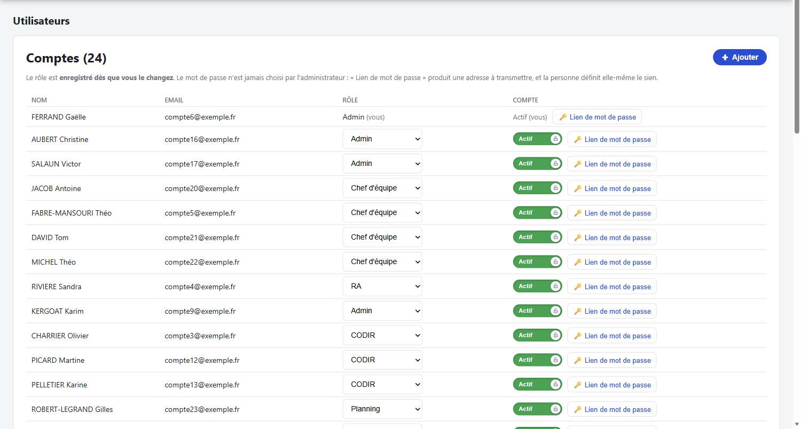
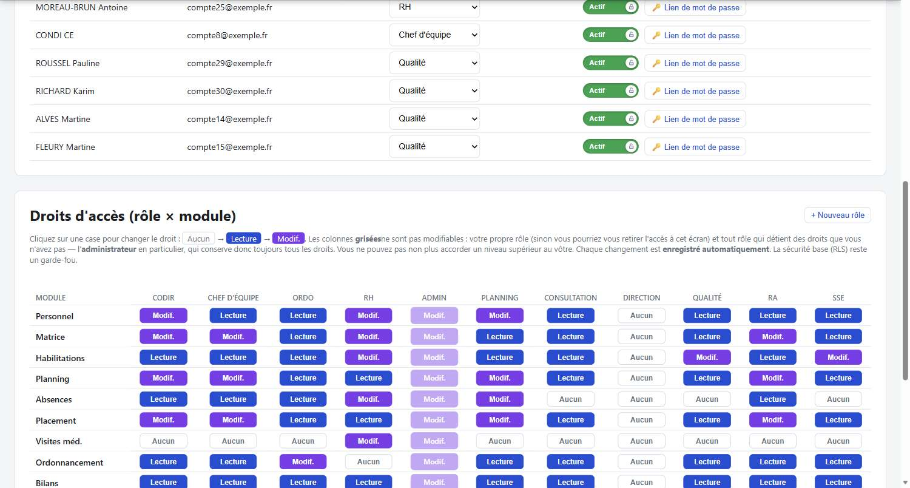
- Ajouter un utilisateur (nom, e-mail, rôle), puis générer le lien de mot de passe et le transmettre à la personne. Regénérer un lien annule le précédent. L'administrateur ne choisit jamais le mot de passe.
- Changer le rôle d'un compte, ou le désactiver (bloque la connexion sans rien effacer).
- Droits d'accès (rôle × module) : chaque case passe de Aucun à Lecture à Modif. d'un clic. On ne peut pas modifier son propre rôle, ni celui de l'administrateur, ni accorder un droit qu'on n'a pas soi-même.
- Nouveau rôle : un rôle personnalisé (ex. « Qualité ») naît sans aucun droit.
RGPD et Param. Visites
RGPD présente les données traitées, leurs finalités, leur conservation et les droits des personnes. Param. Visites règle le module Visites médicales (voir plus haut).
18. Toutes les couleurs, en un tableau
| Couleur | Où | Sens |
|---|---|---|
| Jaune vif | Partout | Intérimaire (contrat avec agence). |
| Fond rouge clair | Planning, Placement | Hors compétence. |
| Encadré rouge | Planning, Placement | Placement forcé : habilitation manquante. |
| Fond jaune pâle | Planning | Sur-effectif sur le poste. |
| Tuile à cadre orange | Placement | Sureffectif : plus de monde que requis sur le poste (« 3/2 »), y compris sur une ligne fermée par l'ordo (« 1/0 »). |
| ✕ rouge | Matrice, Planning | Restriction sur le poste. |
| Violet | Planning, TV, Placement | Temps partiel ; colonne « À répartir ». |
| Gris | Planning, Personnel | Hors effectif (sans contrat ce jour) ; personne partie. |
| Bleu | Planning | Semaine en cours, jour du jour. |
| Vert | TV | Aujourd'hui. |
| Habilitations | Valable · moins de 90 jours · expirée. Blanc : jamais passée ; grisé : supprimée. | |
| Matrice | Niveaux 1, 2, 3 (camembert qui se remplit). | |
| Couleur du motif | Planning, Placement, Absences | Absence (CP, maladie…), selon Param. RH. |
| Couleur de l'équipe | Partout | Pastille devant les noms, filtres. |
| ! orange | Personnel, Matrice | Fiche incomplète ; personne sans aucune compétence. |
| Rouge dans un compteur | Placement, bilans | Il manque du monde. |
19. Pas-à-pas
Les gestes les plus courants, du début à la fin. Chacun renvoie à la section détaillée.
Préparer une semaine de production
- Ordonnancement : la semaine est initialisée (⚙️ Initialiser) et les lignes ouvertes sont à jour.
- Absences : les congés, arrêts et formations connus sont saisis.
- Planning, sur le bon quart : bouton TP + pré-affectation en tête de semaine pour poser les temps partiels et les titulaires. Lisez le message : il liste ceux qu'il n'a pas pu placer.
- Complétez les cases vides (clic sur la case, ou flèche » pour recopier sur la semaine), en commençant par les conducteurs. Ouvrez + Bilan pour vérifier présents / requis et les alertes.
- Le jour J, au Placement : répartissez les opérateurs restants sur les postes et les numéros de rotation, vérifiez le compteur, puis PDF pour Affich. pour la feuille du couloir.
Accueillir un nouvel intérimaire
- Personnel → ＋ Ajouter : contrat Intérim, agence, nom, prénom, équipe, service, date d'arrivée, date du livret d'accueil, pointure.
- Au besoin, son commentaire (engrenage) — jamais d'information médicale.
- Habilitations : saisissez les formations passées à l'accueil (hygiène…).
- Matrice : niveau 1 sur les postes où il débute ; une cible plus haute si on veut le faire progresser.
- Il apparaît dans la liste des noms du Placement, en jaune, prêt à être placé.
Un intérimaire revient (vacances, nouvelle mission)
- Cherchez-le dans Personnel avec le statut Tous (il est peut-être « Parti »).
- Ouvrez le Cycle de vie (clic sur Contrat ou Statut) et ajoutez une période : date de début, date de fin si elle est connue, agence. Ne créez pas de seconde fiche.
- Il redevient « Actif » à la date de début, avec ses compétences et habilitations d'avant.
Traiter une demande de congé
- Saisie dans Absences avec le motif « congé en attente » (ou celui que le site utilise).
- Le responsable filtre Absences sur ce motif pour voir ce qui reste à valider ; le bilan Assez de compétences ? aide à décider.
- Validé : crayon sur la ligne, motif remplacé par le vrai (CP, RTT…). Refusé : corbeille.
Un départ
- Cycle de vie de la personne : date de fin du dernier contrat (et son motif).
- Si des affectations existaient après cette date, acceptez de les retirer.
- La personne passe « Partie » le lendemain : elle sort du planning, son poste fixe est libéré, elle reste dans l'historique. Pour une retraite annoncée, saisissez la date à l'avance : les bilans l'anticipent.
Enregistrer une session de formation
- Habilitations : filtrez sur le service, ou cliquez l'en-tête de la formation.
- Pour chaque participant : clic sur sa pastille, date de passage = date réelle de la session, et si besoin la réserve du formateur en commentaire. Enregistrez.
- Saisie en retard ? Ce n'est pas grave : avec la vraie date, l'échéance est juste, et le rouge disparaît aussitôt du Planning et du Placement.
Préparer les recyclages du mois
- Bilans → Recyclages à prévoir.
- Choisissez Réglementaires ou Internes (chacun voit ses formations), l'échéance (par exemple ≤ 90 j) et au besoin une formation précise.
- Excel : télécharge la liste affichée, filtres compris.
Retrouver qui était sur un poste un jour donné
- Planning en vue Par poste, sur le bon quart et la bonne semaine : une ligne par place, les noms jour par jour.
- Ou le Placement du jour, sur le bon quart : le plan avec les numéros de rotation tenus à la prise de poste.
- Pour savoir qui a modifié l'affectation, et quand : le Journal.
Créer le compte d'un collègue
- Utilisateurs → Ajouter un utilisateur : nom, e-mail, rôle.
- Générer le lien de mot de passe et le lui transmettre aussitôt (il expire vite).
- Si le rôle n'existe pas, créez-le (Nouveau rôle) et ouvrez-lui seulement les modules utiles.
20. Questions fréquentes
- Je ne vois pas le même menu qu'un collègue.
- Normal : les menus dépendent des droits de votre compte. Si un module vous manque, demandez-le à l'administrateur.
- L'écran est grisé, avec « Consultation seule ».
- Vous avez le droit de lecture sur ce module, pas de modification. Vous ne pouvez rien casser.
- Un nom est grisé, je ne peux pas le placer.
- Cette personne n'est pas dans votre équipe : seul son chef d'équipe (ou un compte aux droits complets) peut la placer.
- Je ne trouve pas quelqu'un.
- Tapez son nom dans la recherche : elle ignore les filtres d'équipe et de service. Au Personnel, passez le statut sur « Tous » : la personne est peut-être « À venir » ou « Partie ».
- Les codes de poste dans les cases ne me parlent pas.
- Passez la souris sur la case : l'info-bulle donne le nom complet du poste et sa ligne. La liste complète des codes est dans le Référentiel (colonne Code).
- Sur le planning du matin, je vois des gens de l'après-midi.
- En équipe AUTO, le planning d'un quart garde tout le monde accessible, car on peut déplacer quelqu'un d'un quart à l'autre une semaine donnée. « → Après-midi » dans une case dit qu'elle est déjà sur l'autre quart ce jour-là. Choisissez une équipe pour ne voir qu'elle.
- Que veulent dire le fond rouge, l'encadré rouge, le fond jaune ?
- Fond rouge : hors compétence. Encadré rouge : habilitation manquante (placement forcé). Fond jaune : plus de monde que requis sur le poste. Voir Toutes les couleurs.
- J'ai saisi la formation, la case reste rouge.
- Vérifiez la date de passage : si l'échéance calculée est déjà dépassée (date ancienne, durée de validité courte), la personne n'est toujours pas habilitée. Rechargez ensuite la page du Planning ou du Placement.
- Une formation manque mais le placement n'a rien demandé.
- Seules les habilitations cochées « Habil. requises » sur le poste, au Référentiel, sont contrôlées. Les autres (hygiène, par exemple) ne bloquent rien.
- Je veux suspendre l'habilitation de quelqu'un.
- Supprimez-la (clic sur la pastille). Elle passe en grisé, ne compte plus, et son historique reste consultable. Le jour où la personne repasse la formation, saisissez la nouvelle date.
- Une colonne affiche « Jour sans production ».
- Aucun quart n'est actif ce jour-là dans l'Ordonnancement (ou la semaine n'est pas initialisée). Contactez l'ordonnancement.
- Une ligne est marquée « fermée par ordo » et pourtant des gens y sont placés.
- La ligne est fermée dans l'Ordonnancement (besoin 0), mais quelqu'un y a été placé : soit une reprise est prévue, soit l'ordonnancement n'est pas à jour. Les deux sont possibles ; l'outil ne bloque pas.
- Le poste où je veux placer quelqu'un n'apparaît pas.
- Le poste ne tourne pas sur ce quart (« – » au Référentiel), sa ligne ou lui-même est fermé à cette date ou désactivé.
- Polaris refuse de placer quelqu'un ce jour-là.
- Aucun contrat ne couvre ce jour (avant l'arrivée, après le départ, entre deux missions) : voir son Cycle de vie. Ou le poste ne tourne pas sur ce quart.
- Le compteur de couverture ou un bilan semble faux.
- Il suit l'effectif requis du Référentiel et les lignes ouvertes à l'Ordonnancement. Un effectif mal réglé, ou une ligne restée ouverte, fausse le besoin.
- Les quarts des équipes ne correspondent pas à la réalité.
- La rotation part d'une semaine de référence (Réglages · Équipes). Ajoutez une nouvelle référence à la bonne date, sans modifier l'ancienne.
- J'ai fait une fausse manipulation.
- Le Journal donne l'ancienne valeur : ressaisissez-la. Rien n'est définitivement perdu.
- L'écran TV n'est pas à jour.
- Il vérifie toutes les 5 minutes s'il y a du nouveau : patientez, ou appuyez sur F5. Si rien ne change, vérifiez la connexion du poste.
- Mon lien de connexion ne marche pas.
- Il a expiré ou a déjà servi. Demandez un nouveau lien à l'administrateur.